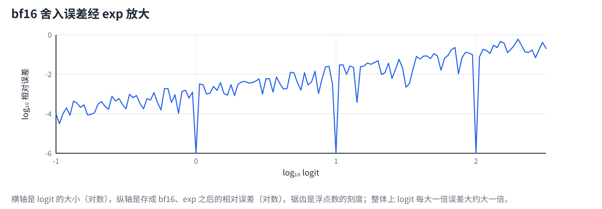
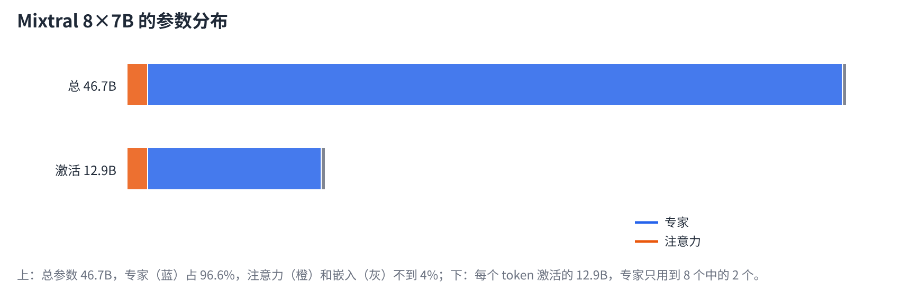
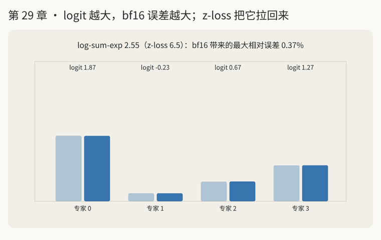

第 29 章 · router z-loss 与 Mixtral：MoE 训练怎么稳住，一个开源 MoE 长什么样
本地运行
git clone https://github.com/wikieden/beyond-transformer
cd beyond-transformer/code/notebooks
pip install jupyterlab torch numpy
jupyter lab ch29_router_zloss_mixtral.ipynb也可以下载后直接用 VS Code 打开 .ipynb 运行。需要 GPU 的章节在 Colab 里选「代码执行程序 → 更改运行时类型 → GPU」。
本章回答：MoE 的 router 后面跟着 exp（softmax），logit 一大，bf16 的舍入误差就被放大成概率的大误差，大模型训练会因此崩掉。router z-loss 怎么把 router 的 logit 压小，为什么它不影响模型效果？Mixtral 8×7B 的参数都花在哪了？它的专家是不是按“数学、生物、代码”这样的主题分工的？
讲解日期：2026-11-26 · 上一章：第 28 章 负载均衡 · 下一章：第 30 章 DeepSeekMoE
对应原文：ST-MoEtransformer-deep-dive/materials/text/papers/st-moe-2202.08906.txt§3.3 router z-loss 式 (5) L376–L390（L_z = (1/B)Σ_i(log Σ_j e^{x_ij})²，惩罚进入 router 的大 logit）、式 (6) 与系数 L408–L412（L_tot = L_CE + c_B·L_B + c_z·L_Z，c_z = 0.001）、§3.4 精度格式 Figure 2 L415–L450（bf16 只有 7 位尾数，数越大舍入误差越大，[32, 64) 区间最大 0.25；z-loss 让数变小、减小舍入误差，对 exp 这类函数最有效）；Mixtralmixtral-2401.04088.txt摘要 L22、§2 式 (1) L114–L120、§5 Routing analysis L307–L330（专家没有按主题分工，更像按句法；相邻 token 常走同一个专家）
本章缩写：router z-loss（路由 z 损失：惩罚 router logit 的 log-sum-exp）；c_z、c_B = z-loss、均衡 loss 的系数；bf16 = bfloat16（第 13 章：8 位指数、7 位尾数）；mantissa（尾数：决定有效数字的位数）；roundoff error（舍入误差）；log-sum-exp（log Σ e^x，softmax 分母的对数）。全部缩写见 附录 · 缩写与术语表
讲解
第一步：bf16 下，大数的舍入误差大（2026-11-26）
类比：用一把只有 8 个刻度的尺子量东西。 量 1 厘米的东西，误差不到 1 毫米；量 50 米的东西，刻度之间隔着好几米，误差也就好几米。bf16 只有 8 位有效二进制数字（7 位尾数 + 隐含的 1），数越大，相邻两个能表示的数隔得越远（ST-MoE Figure 2，L428–L440）。
router 的 logit 进 softmax 要先 exp，logit 的绝对误差 δ 会变成概率的相对误差 e^δ − 1。
数字演示（把一个 logit 存成 bf16）：
| logit | 存成 bf16 | 绝对误差 | exp 之后的相对误差 |
|---|---|---|---|
| 0.37 | 0.369140625 | 0.0009 | 0.09% |
| 3.7 | 3.703125 | 0.0031 | 0.31% |
| 37.3 | 37.25 | 0.05 | 4.88% |
| 73.7 | 73.5 | 0.20 | 18.13% |
logit 在 70 附近时，存一下 bf16，选专家的概率就差了近 20%。这和第 18 章的输出 logit 发散是同一类问题，只是出在 router 上。ST-MoE 发现，在最大的规模上，仅仅把 router 放在 float32 里算还不够（L376–L379）。
一句话：bf16 只有 8 位有效数字，数越大舍入误差越大；router 的 logit 一大，exp 之后概率误差可达百分之几十。
第二步：router z-loss：把 router logit 压小（2026-11-26）
ST-MoE 式 (5)（L380–L390）：
B 是 token 数，N 是专家数，x 是进入 router 的 logits。它就是第 18 章的 z-loss 用在 router 上：让每个 token 的 log-sum-exp 接近 0，也就是让 logit 的绝对大小保持在 0 附近。总 loss（式 6，L408–L412）：
数字演示：
| router logits | L_z | 乘 c_z 后 |
|---|---|---|
| [0.5, −0.2, 0.1, 0.3] | 2.54 | 0.0025 |
| [30.5, 29.8, 10.0, 5.0] | 955.0 | 0.955 |
大 logit 时这一项和语言模型的 loss 一样大，梯度会把它压下来。它为什么不影响效果：softmax 对整体平移不敏感（第 18 章），把所有 logit 一起减小，选专家的概率不变，只是数值变得更“好存”。论文的实验：z-loss 让训练稳定，而且质量略有提升（L253–L259、L405）。

图 29-1 · 横轴是 logit 的大小（对数），纵轴是存成 bf16 后、exp 之后的相对误差（对数）。logit 每大一倍，误差大约大一倍；z-loss 把 logit 压在左边的低误差区一句话：router z-loss = log-sum-exp 的平方，系数 0.001，把 router logit 压小、减小 bf16 舍入误差，不改变选专家的概率。
第三步：Mixtral 8×7B 的参数都花在哪（2026-11-26）
第 27 章算过总数，这里拆开看（d = 4096、d_ff = 14336、32 层、8 个专家选 2、GQA 8 组）：
| 部分 | 参数 | 占比 |
|---|---|---|
| 注意力 | 1.34B | 2.9% |
| 专家（FFN） | 45.10B | 96.6% |
| router | 0.001B | 0.0% |
| 嵌入 + 输出 | 0.26B | 0.6% |
| 合计 | 46.7B | 每个 token 激活 12.9B |
96.6% 的参数在专家里，每个 token 只用 2/8，所以激活参数约是总数的 28%。router 小到可以忽略，但它决定了一切怎么分配。

图 29-2 · 左：总参数 46.7B 的构成，专家占 96.6%；右：每个 token 激活的 12.9B 里，专家只用到 2/8一句话：Mixtral 8×7B 的参数 96.6% 在专家里，注意力和嵌入不到 4%；每个 token 只激活 8 个专家中的 2 个。
第四步：专家没有按主题分工（2026-11-26）
一个自然的猜想：有的专家管数学、有的管生物、有的管代码。Mixtral §5（L307–L330）在 The Pile 的不同子集上统计了专家的选择：
- 没有明显的主题分工：ArXiv 论文、生物摘要、哲学文章的专家分布几乎一样；只有合成的数学数据（DM Mathematics）略有不同；
- 更像按句法分工：Python 里的
self、英文里的Question常走同一个专家；代码的缩进 token 总是去同几个专家，在第一层和最后一层尤其明显； - 相邻 token 常走同一个专家：位置上有局部性，比随机分配高很多。
所以 MoE 的“专家”不是人类意义上的“领域专家”，而是网络自己学出来的一种分工方式，更接近词形、句法层面。
场景代码：在 Hugging Face 里统计 Mixtral 的专家选择（真实库调用，output_router_logits=True 会返回每层 router 的 logits；本书 chapter-code 只用 NumPy，这段没跑过）：
out = model(**inputs, output_router_logits=True)
for layer, logits in enumerate(out.router_logits): # 每层 (token 数, 8)
top2 = logits.topk(2, dim=-1).indices
counts = torch.bincount(top2.flatten(), minlength=8)
print(layer, counts.tolist()) # 每个专家被选了几次
一句话：Mixtral 的专家没有按主题分工，更像按句法、词形分工，而且相邻 token 常走同一个专家。
动画演示：logit 越大，bf16 误差越大；z-loss 把它拉回来

可交互版：animations/29-router-zloss-mixtral.html（滑块：router logit 的整体大小；勾选框：加 z-loss 后的效果）。
怎么看：
- 左边 4 根柱子是 4 个专家的 router 概率：浅色是 float32 算的，深色是 logit 存成 bf16 后算的（第一步）；
- 拖大 logit：两种颜色的柱子差得越来越多，右上角是最大的概率误差；
- 勾上“z-loss”：logit 被整体平移到 0 附近，概率不变，误差几乎消失（第二步）。
练习与作答记录
题 1（第一步）：bf16 在 [64, 128) 区间里，相邻两个能表示的数相差多少？（提示：7 位尾数，区间宽 64）logit 在这个区间时，最大的舍入误差是多少？
题 2（第二步）：router logits = [10, 10, 10, 10]，L_z 是多少？把它们都减 10 后呢？两种情况下 router 的概率一样吗？
题 3（第三步）：Mixtral 如果改成 8 个专家选 1 个，每个 token 激活的参数大约是多少？
口诀
八格尺子量大数：bf16 数越大刻度越粗，exp 一放大，概率差两成。
router z-loss 是 log-sum-exp 的平方，系数千分之一：logit 压回零附近，概率不变、误差变小。
Mixtral 九成七在专家，激活两个；专家不按主题分，按句法分，邻居常同路。
本章复习卡片
必背：B63（bf16 舍入误差与 router z-loss、Mixtral 的参数分布、专家不按主题分工）。练习做完后，按答错、卡住的地方再补。
附录 · 延伸阅读
留给以后深入学习用，不影响本章主线。★ 是建议先读的。
推荐阅读
| 读什么 | 读哪里 | 读它为了什么 |
|---|---|---|
| ★ ST-MoE（Zoph 等 2022） | §3.3 L376–L412；§3.4 L415–L450 | router z-loss 与精度格式 |
| ★ Mixtral of Experts（2024） | §2 L114–L120；§5 L307–L330 | 开源 MoE 的配置和路由分析 |
| 本书 第 18 章 训练稳定性 | z-loss | 同一个想法用在输出层 |
| 《数学与实验统计》第 44 章 训练稳定性、第 49 章 量化 | bf16 / fp8 的舍入 | 低精度格式的误差 |
数学原理
- 浮点舍入误差：有效位数 p 时，[2^e, 2^{e+1}) 区间的相邻间隔是 2^{e−p+1}，最大舍入误差是它的一半；bf16 的 p = 8。
- exp 放大：e^{x+δ}/e^x = e^δ ≈ 1 + δ，logit 的绝对误差变成概率的相对误差。
- z-loss 不改分布：softmax 对平移不变，z-loss 只决定“平移到哪”。
公式清单
| 公式 | 意思 |
|---|---|
| \(L_z = \frac1B\sum_i(\log\sum_j e^{x_{ij}})^2\) | router z-loss（式 5） |
| \(L_{tot} = L_{CE} + c_BL_B + c_zL_Z\)，\(c_z = 10^{-3}\) | 总 loss（式 6） |
| 相对误差 ≈ \(e^{\delta} - 1\) | logit 误差经 exp 放大 |
代码对照：把本章的数字用代码算一遍
NumPy。代码在仓库本地
beyond-transformer/solutions/chapter-code/ch29_router_zloss_mixtral.py，配套测试tests/test_ch29.py，notebook 在notebooks/ch29_router_zloss_mixtral.ipynb：
bash cd beyond-transformer/solutions/chapter-code uv run python ch29_router_zloss_mixtral.py uv run pytest tests/test_ch29.py
讲义 ↔ 代码：
| 讲义 | 公式 | 写法 | 跑出来 |
|---|---|---|---|
| 第一步 bf16 误差 | 舍入 + exp | to_bf16、bf16_error |
73.7 → 73.5，18.13% |
| 第二步 router z-loss | 式 (5) | router_z_loss(logits) |
2.54 vs 955.0 |
| 第三步 参数分布 | 按部分数 | mixtral_breakdown() |
专家 96.6% |
关键几行：
a = (a + 0x7FFF + ((a >> 16) & 1)) & 0xFFFF0000 # float32 → bf16：抹掉低 16 位（就近舍入）
lse = m + np.log(np.exp(x - m).sum(1, keepdims=True)) # 稳定的 log-sum-exp
return float((lse**2).mean()) # router z-loss
代码里才看得到的 2 件事：
- bf16 就是 float32 的高 16 位：所以转换只要把低 16 位按“就近、平局取偶”舍入掉；这也是 bf16 和 float32 指数范围一样大的原因。
- z-loss 的 log-sum-exp 也要稳定地算：先减最大值再 exp（第 1 章），否则大 logit 时自己就先溢出了。
自己改一改（不影响练习答案）：
- 把
bf16_error的 logit 换成 300、1000，相对误差变成多少？ - 给
mixtral_breakdown换成 16 个专家选 2，专家的占比和激活参数各是多少？